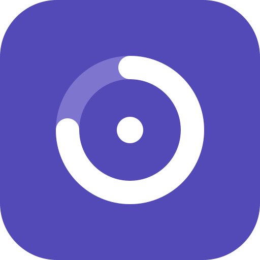

Elapsed
Política de privadesa
Última actualització: 16 de novembre de 2026
Elapsed és una aplicació per recordar tasques recurrents. Aquesta política explica quines dades fa servir i per què.
Les teves tasques
Les tasques, l'historial i les preferències es desen només al teu dispositiu. No tenim cap servidor on es guardin i no hi tenim accés. Si tens activades les còpies de seguretat d'Android, el sistema pot desar una còpia al teu compte de Google, segons la configuració del teu mòbil.
Notificacions
Els avisos es programen al mateix dispositiu. No s'envien a cap servidor.
Anuncis (Google AdMob)
L'app mostra anuncis de Google AdMob. Per mostrar-los i mesurar-los, Google pot recollir l'identificador de publicitat del dispositiu, l'adreça IP, informació del dispositiu i dades d'interacció amb els anuncis. A l'Espai Econòmic Europeu, el Regne Unit i Suïssa et demanem el consentiment abans de mostrar anuncis personalitzats, i el pots canviar en qualsevol moment des de Menú → Privadesa dels anuncis. Més informació: com fa servir Google les dades.
Formulari de contacte
Si ens envies un missatge des de l'app, rebem el text, el tipus de missatge, el correu (només si el poses) i informació tècnica bàsica (versió de l'app, idioma i sistema) per poder respondre't i resoldre incidències. Ho guardem en un full de càlcul privat i ho esborrem quan ja no cal.
Menors
L'app no està adreçada a menors de 13 anys.
Els teus drets i contacte
Pots demanar-nos consultar o esborrar els missatges que ens hagis enviat escrivint a zarloklabs@gmail.com. Si desinstal·les l'app, s'esborren totes les dades que hi havia al dispositiu.
Política de privacidad
Última actualización: 16 de noviembre de 2026
Elapsed es una aplicación para recordar tareas recurrentes. Esta política explica qué datos usa y por qué.
Tus tareas
Las tareas, el historial y las preferencias se guardan solo en tu dispositivo. No tenemos ningún servidor donde se almacenen y no tenemos acceso a ellas. Si tienes activadas las copias de seguridad de Android, el sistema puede guardar una copia en tu cuenta de Google, según la configuración de tu móvil.
Notificaciones
Los avisos se programan en el propio dispositivo. No se envían a ningún servidor.
Anuncios (Google AdMob)
La app muestra anuncios de Google AdMob. Para mostrarlos y medirlos, Google puede recoger el identificador de publicidad del dispositivo, la dirección IP, información del dispositivo y datos de interacción con los anuncios. En el Espacio Económico Europeo, el Reino Unido y Suiza te pedimos el consentimiento antes de mostrar anuncios personalizados, y puedes cambiarlo en cualquier momento desde Menú → Privacidad de los anuncios. Más información: cómo usa Google los datos.
Formulario de contacto
Si nos envías un mensaje desde la app, recibimos el texto, el tipo de mensaje, el correo (solo si lo indicas) e información técnica básica (versión de la app, idioma y sistema) para poder responderte y resolver incidencias. Lo guardamos en una hoja de cálculo privada y lo borramos cuando ya no es necesario.
Menores
La app no está dirigida a menores de 13 años.
Tus derechos y contacto
Puedes pedirnos consultar o borrar los mensajes que nos hayas enviado escribiendo a zarloklabs@gmail.com. Si desinstalas la app, se borran todos los datos que había en el dispositivo.
Privacy policy
Last updated: 16 November 2026
Elapsed is an app for keeping track of recurring tasks. This policy explains what data it uses and why.
Your tasks
Tasks, history and settings are stored only on your device. We have no server where they are kept and we cannot access them. If Android backup is turned on, the system may save a copy to your Google account, depending on your phone's settings.
Notifications
Reminders are scheduled on the device itself. Nothing is sent to a server.
Ads (Google AdMob)
The app shows ads from Google AdMob. To show and measure them, Google may collect the device's advertising ID, IP address, device information and ad interaction data. In the European Economic Area, the UK and Switzerland we ask for your consent before showing personalised ads, and you can change it at any time from Menu → Ad privacy. More information: how Google uses data.
Contact form
If you send us a message from the app, we receive the text, the message type, your email (only if you enter it) and basic technical information (app version, language and system) so we can reply and fix problems. It is kept in a private spreadsheet and deleted when no longer needed.
Children
The app is not directed at children under 13.
Your rights and contact
You can ask us to see or delete any messages you sent us by writing to zarloklabs@gmail.com. Uninstalling the app deletes all data stored on the device.